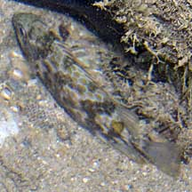
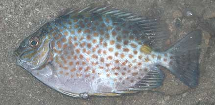
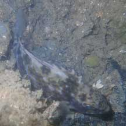
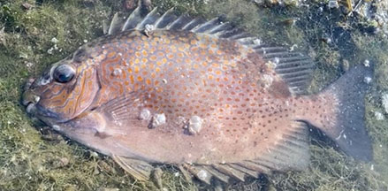
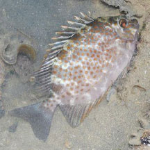
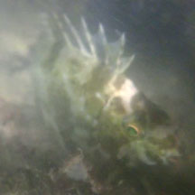
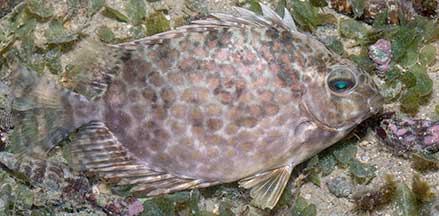

|
|
|
Orange-spotted
rabbitfish
Siganus guttatus
Family Siganidae
updated
Oct 2020
Where
seen? This gaily spotted fish is sometimes seen on on our
Northern shores, among coral rubble. Sadly, often encountered trapped
in driftnets. Elsewhere, it is found in turbid reefs near mangroves
and appears to prefer places with lower salinity. Young fishes settle
in seagrass beds near river mouths while adults leave and enter rivers
with the tides. Adults travel in groups of 10-15. Unlike other rabbitfishes,
this species is said to be active at night.
Features: To about 40cm, those
seen about 15-20cm. It is named
for its rabbit-like snout ('siganus' means 'has a nose like a rabbit')
or possibly for its habit of grazing on seaweeds. It is also called
Spinefoot after the spines on its pelvic fins, a unique feature of
this family. It has tiny scales. It is distinguished by the spotted pattern and
large golden spot below the dorsal fin near the tail which is about
the same diameter as the eye. The upper body is dusky blue, and lower
body silvery. The head has lines and spots. It has stout, venomous
spines. |

Tanah Merah, May 10 |

Large golden
spot near the tail.
Chek Jawa, Aug 02 |
Painful sting! The rabbitfish has spines on its fins
that are grooved and contain venom glands. These spines may be found
on the dorsal, anal and pelvic fins. The sting of these spines can
be quite painful to humans, but is generally not fatal. The fishes
use their spines in self-defence and not for hunting prey.
How to stay safe: Wear covered shoes. Don't handle rabbitfishes. |
|
What does it eat? It eats algae
that grows on the sea bottom.
Human uses: Sold fresh in some places as food. |
| Orange-spotted
rabbitfishes on Singapore shores |
| Other sightings on Singapore shores |

Punggol, Aug 22
Photo shared by Kelvin Yong on facebook. |
|
|

Tanah Merah, Jun 23
Photo shared by Kelvin Yong on facebook.
|

Tanah Merah, May 13
Photo shared by Loh Kok Sheng on flickr. |

St John's Island, Jun 24
Photo shared by Kelvin Yong on facebook. |

Kusu Island, Aug 17
Photo shared by Marcus Ng on facebook. |
Links
References
- Allen, Gerry,
2000. Marine Fishes of South-East Asia: A Field Guide for Anglers
and Divers. Periplus Editions. 292 pp.
- Lieske, Ewald
and Robert Myers. 2001. Coral
Reef Fishes of the World
Periplus Editions. 400pp.
|
|
|